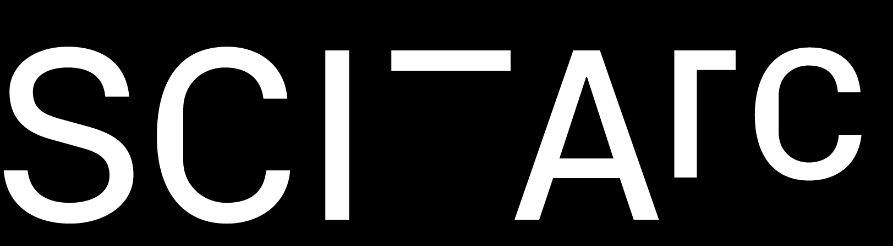

Geothermal Futures Lab Lead Researcher: Mark Foster Gage A collaborative project between SCI-Arc, the Yale School of Architecture, and Mark Foster Gage Architects
High density experimental resin foam provided by Smithers-Oasis, additional support provided by Elise Jaffe and Jeffrey Brown. SCI-Arc Directors Office / Hernan Diaz Alonso, Stephanie Atlan, Yale School of Architecture Dean’s office / Deborah Berke, Kate Rozen, Lead Designer and Researcher: Mark Foster Gage, Engineer: Nous Engineering / Matthew Melnyk, Installation: MKH Inc. / Andreas Froech, Fabrication & Project Management: Shin Office / Melissa Shin, Scenic Painter: Johnny LeBlanc, Scenic props: LCW Props, Senior Research Fellow at Mark Foster Gage Architects (MFGA): Ryan Wilson, Associate Research Fellows at MFGA: Arpapan Chantanakajornfung, Uwe Brunner, Chad Dennis, Jianfei Zhao, John Lin, Rory Turner, Gizelle Magallanes and Truman McNaught, SCI-Arc fabrication shop: Rodney Rojas, Joshua Wallin, Brandon Youndt, Dash Krehel, Mariner Padwa, Michael Perrick, Drew Holliday, Nicholas Humber, Elliott Lamborn, Leif Maginnis, Hector Solis, SCI-Arc Facilities: Cindy Jollotta, George Mayer, SCI-Arc Research Assistants: Corie Yaguchi (lead), Frank Y.T. Chen (lead), Marianna Girgenti (lead), Jacqueline Huang (lead), Tucker van Leuwen-Hall (lead), Gabriela Zappi (lead), Adam Bell, Andrea Cadioli, Juan Cardenas Jr., Borja Lopez Calviño, Yi Ning Lui, Jackson Lukas, William Maya, Cole Masuno, Prarthna Misra, Sara Segura, Dongwoo Suk, Mateus Vieira Comparato, Juan Villarreal, Liang Yu, Yale University graduate students: Gentley Smith (ta), Dana Al Mathkoor, Kate Fisher, Phineas Taylor-Webb, Ray Wu, Simone Cutri, Martin Man, Mengi Li.
